#5166 Road House
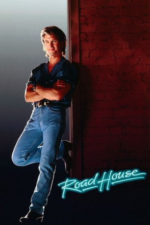 
 IMDB-Wertung: 6.5 / 10
IMDB-Wertung: 6.5 / 10  Tomatometer: 38
Tomatometer: 38  Metascore: 0
Metascore: 0 
Der professionelle Rausschmeißer Dalton soll das heruntergekommene "Double Deuce" auf Vordermann bringen. Schnell merkt er, daß er mit mehr als nur ein paar Trunkenbolden aufzuräumen hat. Sein Gegenspieler ist der skrupellose Wesley, der mit seinen Mannen nicht nur die Bar, sondern auch die gesamte Stadt terrorisiert. Zu allem Überfluß verliebt sich Dalton in Wesleys Exfreundin Doc. Als der Schurke Daltons besten Freund und Mentor beseitigen läßt, sieht er rot. Er tötet Wesleys Killer, und als der Bösewicht auf Dalton anlegt, wird er von den rechtschaffenen Bürgern der Stadt erschossen.
Jahr: 1989
Dauer: 114 Minuten
FSK: 16
Land: USA Studio: United ArtistsTonspuren: DD2.0 - ,
Untertitel:
Auflösung: 1080p (1920x824) Größe: 8775 MB
Genre: Action, Thriller
Regisseur: Rowdy Herrington
Drehbuch: Alexander Dydyna
Soundtrack:
Darsteller:
- 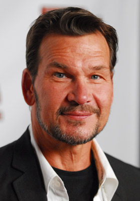 Patrick Swayze als Dalton
- 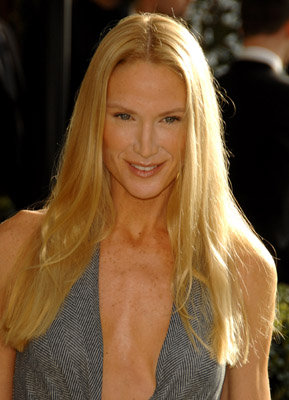 Kelly Lynch als Doc
 Sam Elliott als Wade Garrett
Sam Elliott als Wade Garrett- 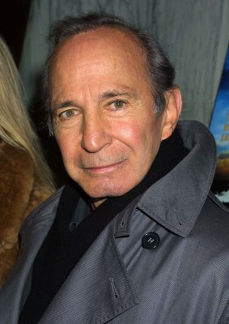 Ben Gazzara als Brad Wesley
- 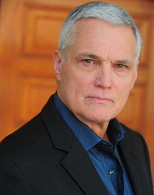 Marshall R. Teague als Jimmy
- 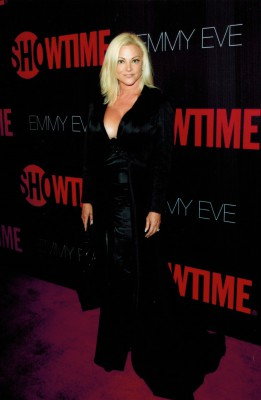 Julie Michaels als Denise
- 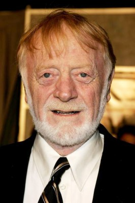 Red West als Red Webster
- Jeff Healey als Cody
- 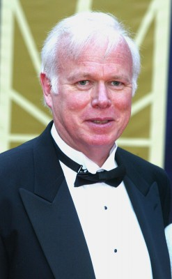 Kevin Tighe als Tilghman
- 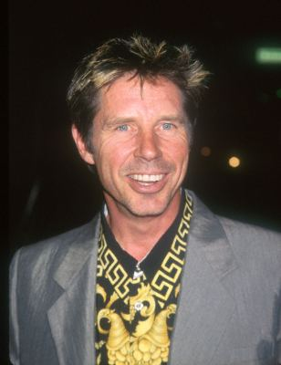 John Doe als Pat McGurn
- Kathleen Wilhoite als Carrie
- Roger Hewlett als Younger
- Gary Hudson als Steve
- Terry Funk als Morgan
- Michael Rider als O'Connor
- John William Young als Tinker
- 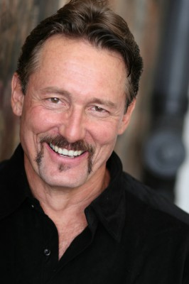 Anthony De Longis als Ketchum
- 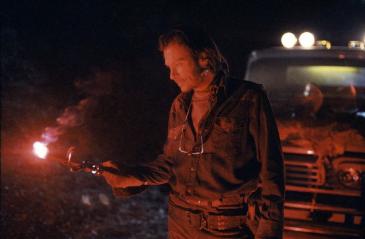 Joe Unger als Karpis
- Tiny Ron als Mountain
 Keith David als Ernie Bass
Keith David als Ernie Bass- Patricia Tallman als Bandstand Babe
- Michael J. Fisher als Bandstand Bouncer
- 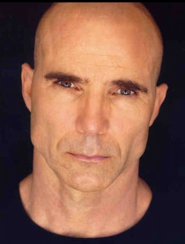 Bob Jennings als Bandstand Bouncer
- Frank Noon als Barfly
- Michael Wise als Gawker
- 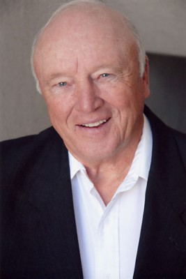 Tom Finnegan als Chief of Police
- Lisa Michelle Axelrod als Party Girl
- Laura Albert als Strip Joint Girl
- Christina Veronica als Strip Joint Girl
- Terry Nemeroff als Loudmouth
- 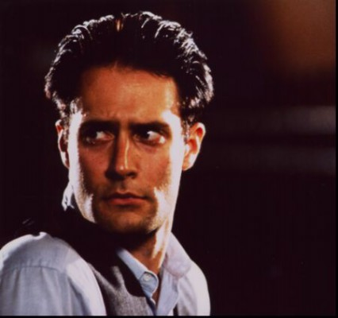 Aaron Michael Lacey als Marine in Strip Joint , uncredited
- 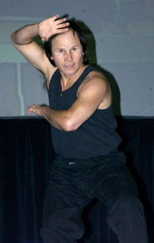 Benny Urquidez als Laughing Henchman , uncredited
- Sunshine Parker als Emmet
- Travis McKenna als Jack
- Kurt James Stefka als Hank
- Sheila Ryan als Judy
- Jon Paul Jones als Stroudenmire
- Lauri Crossman als Stella
- Ed DeFusco als Oscar
- Joseph Rockman als Cody's Band
- Thomas Stephen als Cody's Band
- 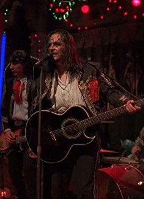 Tito Larriva als Cruzados
- Tony Marsico als Cruzados
- Gonzalo Quintana III als Cruzados
- Marshall Rohner als Cruzados
- John Oldach als Bandstand Tough Guy
- Joey Plewa als Bandstand Tough Guy
- Susan Lentini als Bandstand Babe
- Dawn Ciccone als Steve's Girl
- Julie Royer als Steve's Girl
Datei: X:\1989\Road House (1989, FSK16, 1920x824).mkv seit 27.12.2016
Festplatte: HD 1987-1991
 Es gibt insgesamt 54 Filme in der Gruppe '1989'
Es gibt insgesamt 54 Filme in der Gruppe '1989'